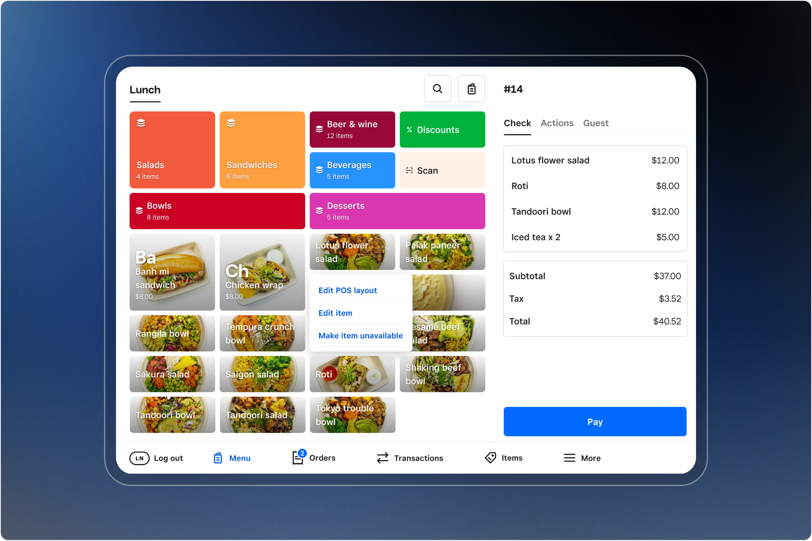
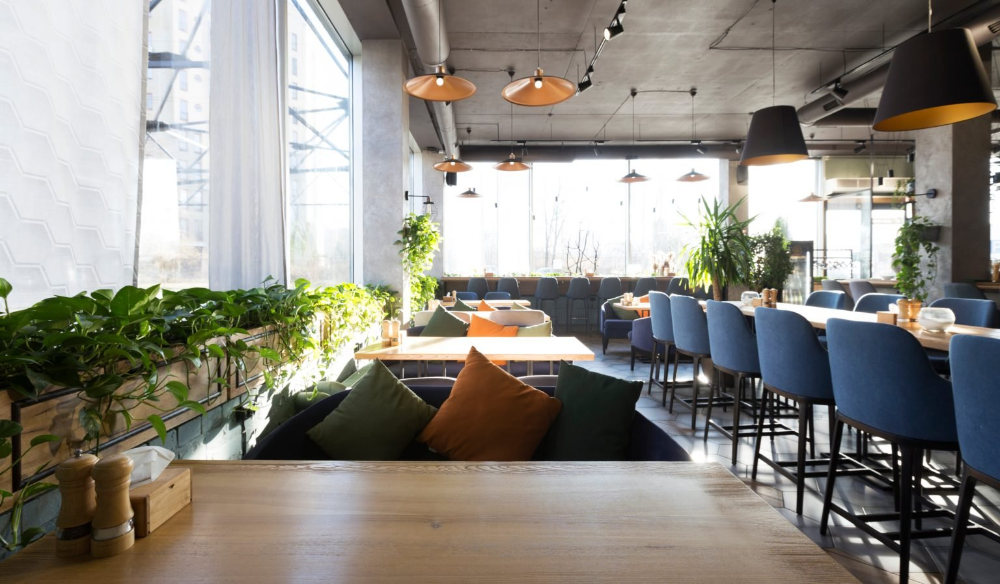
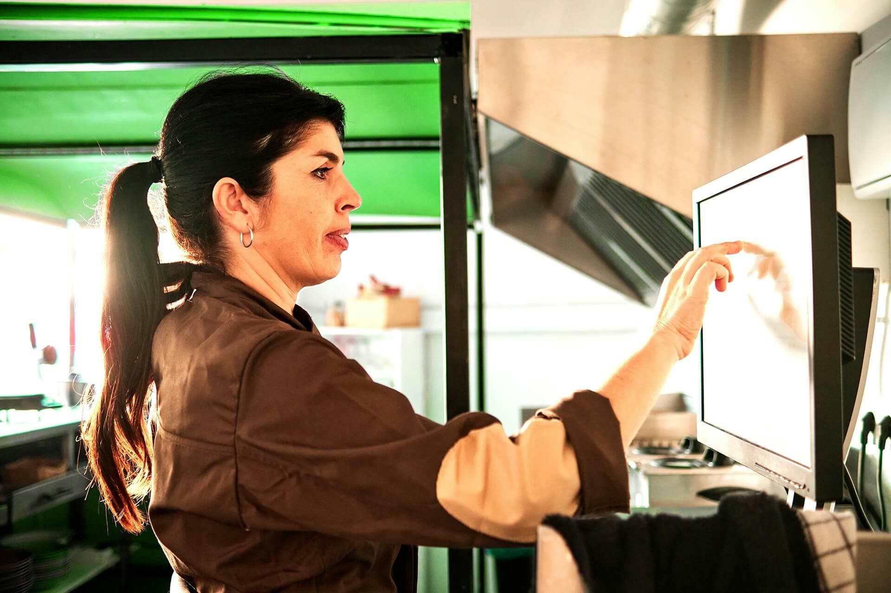
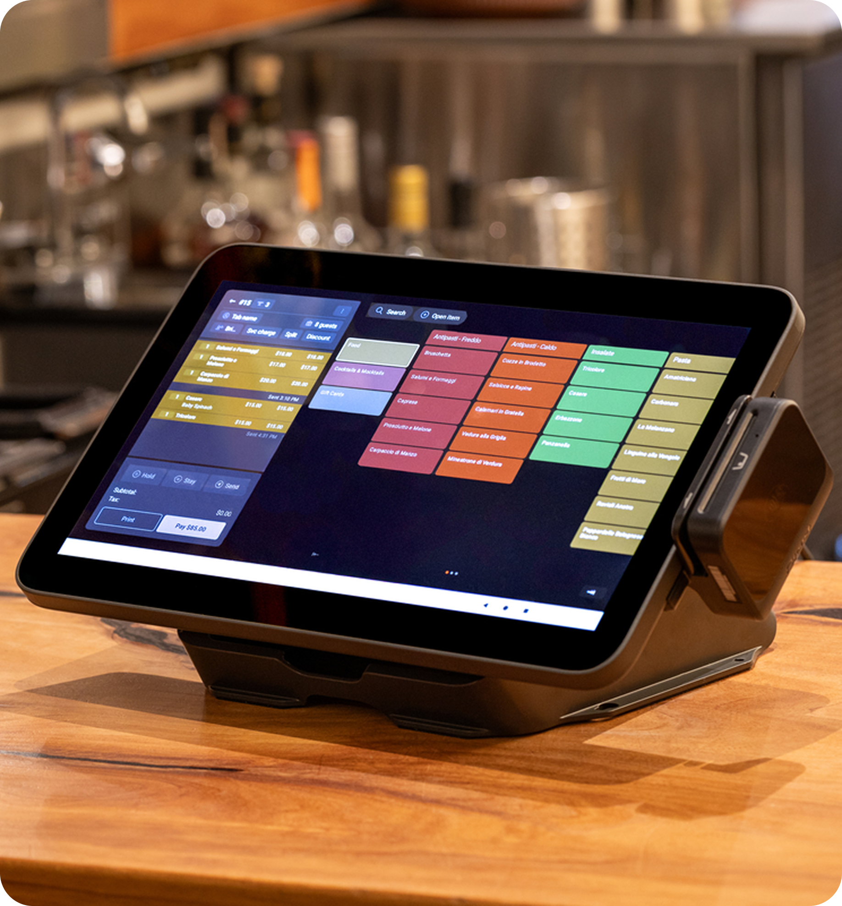
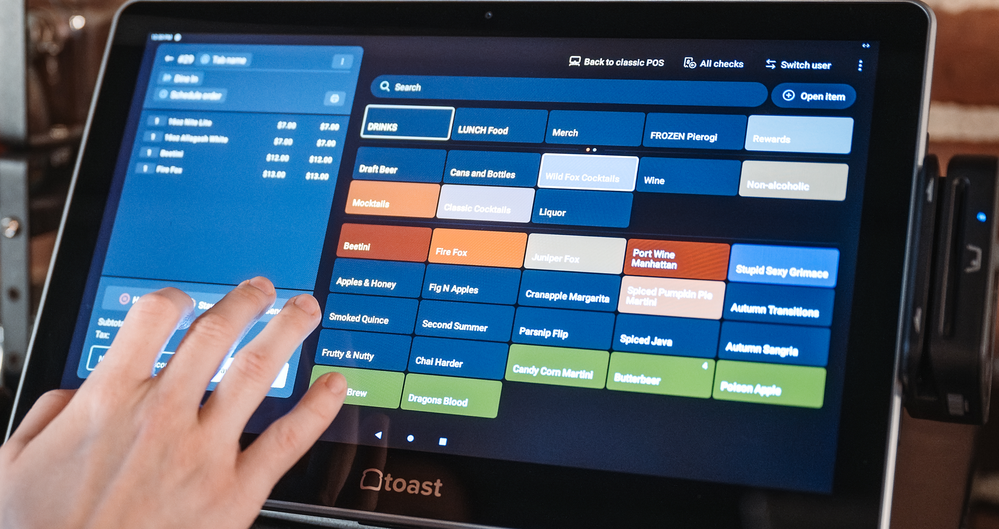
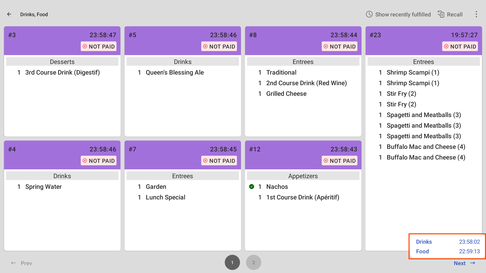
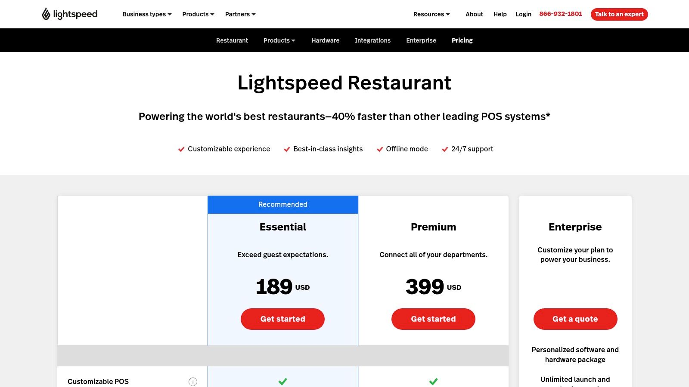
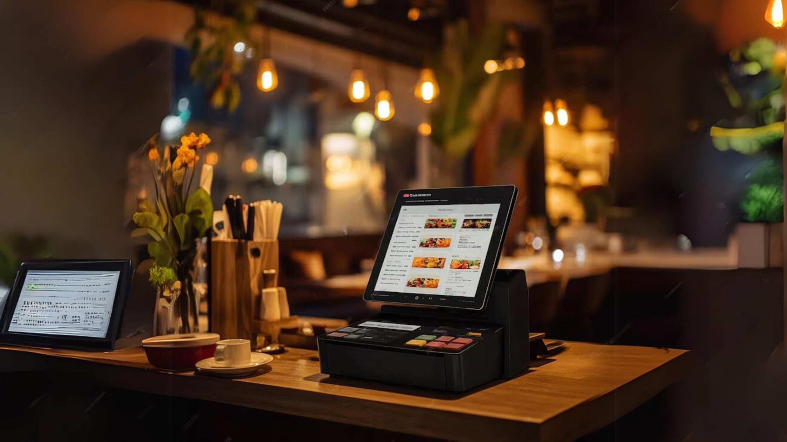

Vizualna analiza designa 2026
Najlepši POS vmesniki
na svetu
Kateri POS sistemi imajo najboljši design?
Primerjava Toast, Square, Lightspeed in RestaurantOS
RestaurantOS v1.0.2 — Vizualna primerjava
7. september 2026
Design ranking — najlepši POS vmesniki
Po analizi stotin screenshotov iz produktne dokumentacije, G2, Capterra
in YouTube reviewov smo ocenili design kvaliteto vseh večjih POS sistemov.
Kriteriji: modernost, čistost, tipografija, barvna paleta, uporabniška
izkušnja, organizacija informacij in mobilna optimizacija.
| # |
POS sistem |
Design ocena |
Najboljša lastnost |
Šibka točka |
| 1 |
Square |
★★★★★ |
Minimalistični design, čista tipografija |
Preglednost pri veliko artiklih |
| 2 |
Toast |
★★★★★ |
Barvno kodiranje statusov, KDS izgled |
Dashboard je prenatrpan |
| 3 |
Lightspeed |
★★★★★ |
Premium izgled, elegantna tipografija |
Zastarela mobilna aplikacija |
| 4 |
RestaurantOS |
★★★★★ |
5 jezikov, FURS integracija, PWA |
Manj vizualnih efektov kot Square |
| 5 |
TouchBistro |
★★★★★ |
Preprost iPad vmesnik |
Zastarel design, šibka tipografija |
| 6 |
Clover |
★★★★★ |
Funkcionalen, dober na strojni opremi |
Zastarel dizajn, počasen na starejši opremi |
Zakaj Square zmaga v designu?
Square ima najbolj moderen, minimalističen design z dosledno uporabo
negativnega prostora, čiste tipografije in omejene barvne palelete.
Njihov "less is more" pristop omogoča hitro navigacijo brez kognitivne
obremenitve. Vendar — Square ni na voljo v Sloveniji in
nima FURS potrjevanja, kar je kritično za slovenski trg.
#1 Square — najlepši POS design
Square je absolutni zmagovalec v design kvaliteti. Njihov vmesnik je
optimalen primer minimalističnega designa z maksimalno funkcionalnostjo.
Uporabljajo omejeno barvno paleto (črna, bela, ena poudarna barva),
dosledno tipografijo in veliko negativnega prostora.

Square for Restaurants — prodajni zaslon (vir: Square)
Design prednosti Square
1. Minimalizem: Samo esencialne informacije na zaslonu.
Brez odvračajočih elementov, kar omogoča hitro delo natakarjev.
2. Tipografija: Custom Square Sans font z odlično
berljivostjo. Hierarhija: 24pt naslovi, 16pt besedilo, 12pt oznake.
3. Barvna paleta: Monokromatska z eno poudarno barvo
(zelena za potrditve, rdeča za napake). Brez vizualnega šuma.
4. Mikro-interakcije: Subtilne animacije ob kliku,
hover efekti in gladki prehodi med zasloni.
Square — dodatni screenshoti

Square Online Ordering

Square KDS (kuhinjski zaslon)
Square KDS je zgled za ostale sisteme — čiste kartice z naročili,
barvno kodiranje prioritete (rumena = čaka, zelena = v pripravi,
rdeča = zakasnelo), in timer ki spremeni barvo ko čas teče.
Zakaj Square izgleda tako dobro
Square ima lastno design ekipo (Jack Dorsey, soustanovitelj Twitterja,
je tudi soustanovitelj Squarea). Njihov design system je dokumentiran
in javno dostopen na design.squareup.com. Uporabljajo atomic design
methodology z 200+ komponentami.
#2 Toast — najboljši za restavracije
Toast je na drugem mestu po designu, ampak je prvi po specializaciji
za restavracije. Njihov vmesnik je optimiziran za hitro delo v
gostinstvu z barvnim kodiranjem statusov in hitrimi bližnjicami.

Toast POS — prodajni zaslon z mizami (vir: Toast POS)
Design prednosti Toast
1. Barvno kodiranje: Vsaka miza ima barvo glede na status
(zelena = prosta, rumena = zasedena, rdeča = čaka na plačilo). To omogoča
hitro orientacijo v stalnici.
2. KDS design: Toast KDS je najboljši v industriji —
velike čitljive kartice, timer z barvno spremembo, in "bump" funkcija
za hitro odstranjevanje končanih naročil.
3. Hitre akcije: Vse pogoste akcije (void, split, transfer)
so dostopne z 1 klikom, brez navigacije skozi menije.
Toast — dodatni screenshoti

Toast — mize in tloris

Toast KDS — kuhinjski zaslon
Toast KDS je zlati standard za kuhinjske zaslone. Vsako naročilo je
prikazano kot kartica z: miza, natakar, čas naročila, artikli z
modifikatorji, in timer ki spremeni barvo (zelena → rumena → rdeča).
Kuharji "bumpajo" končana naročila z enim klikom.
Toast design slabosti
Toast dashboard je preveč natrpan z grafikoni in Metrikami, kar lahko
zamoti osredotočenost. Njihova mobilna aplikacija je šibka v primerjavi
z desktop verzijo. Barvna paleta je preveč "gostinska" (oranžna in
rjava) kar je lahko odvračajoče za fine dining.
#3 Lightspeed — premium in eleganten
Lightspeed ima najbolj "premium" izgled od vseh sistemov. Njihov design
je eleganten in moden, z motivom za fine dining in verige restavracij.
Tipografija je izpopolnjena, barvna paleta je sofisticirana.

Lightspeed Restaurant — prodajni zaslon (vir: Flash)
Design prednosti Lightspeed
1. Premium tipografija: Uporabljajo SF Pro in Inter
fonte z odlično hierarhijo. Besedilo je berljivo tudi na manjših zaslonih.
2. Sofisticirana paleta: Nevtralne barve (siva, bela,
temno modra) z diskretnimi poudarki. Idealno za fine dining in
luksuzne restavracije.
3. CRM integracija: Gost profili so lepo prikazani z
alergeni, preferencami in zgodovino obiskov — vse v enem preglednem
zaslonu.
Lightspeed — dodatni screenshoti

Lightspeed — nadzorna plošča

Lightspeed — mize in naročila
Lightspeed dashboard je najbolj informativen med vsemi sistemi — prikazuje
real-time prodajo, popularne artikle, povprečni čas strežbe in napotitve
osebja. Vendar je lahko preveč kompleksen za manjše restavracije.
Lightspeed design slabosti
Lightspeedova mobilna aplikacija je zastarela v primerjavi z desktop
verzijo. Nastavitev je kompleksna in zahteva certificiranega partnerja.
Njihov design je "premium" ampak lahko odvrača za vsakodnevne gostilne
in picerije, ki potrebujejo hitrost in preprostost.
#4 RestaurantOS — naš prispevek
RestaurantOS je na 4. mestu po designu — za Square, Toast in Lightspeed.
Vendar ima edinstvene prednosti ki jih noben tekmec nima: FURS
potrjevanje, 5 jezikov, offline PWA in lokalna podpora.
Design prednosti RestaurantOS
1. Večjezičnost: Edini POS z 5 jeziki (sl/en/it/hr/de).
UI se prilagaja glede na jezik — tudi datumski formati, valute in
davčne oznake.
2. FURS integracija: ZOI, EOR in QR koda so vidni
direktno na računu — brez dodatnih korakov. Edini sistem na svetu
s to funkcionalnostjo.
3. PWA + Offline: Deluje brez interneta z IndexedDB
sinhronizacijo. Service Worker cachira vse statične vire.
4. Modern tech stack: Next.js 16, React 19, Tailwind CSS 4,
Radix UI — najnovejše tehnologije zagotavljajo hitrost in vzdržljivost.
RestaurantOS vs. Square — direktna primerjava
| Kriterij |
Square |
RestaurantOS |
Zmagovalec |
| Design čistost |
★★★★★ |
★★★★ |
Square |
| Tipografija |
★★★★★ |
★★★★ |
Square |
| Barvna paleta |
★★★★★ |
★★★★ |
Square |
| FURS potrjevanje |
☆☆☆☆☆ |
★★★★★ |
RestaurantOS |
| Multi-jezičnost |
★★ |
★★★★★ |
RestaurantOS |
| Offline delovanje |
★★ |
★★★★★ |
RestaurantOS |
| Varnost (testi) |
★★★ |
★★★★★ |
RestaurantOS |
| Cena |
€0–54 |
€0–200 |
Izenačeno |
| Na voljo v SI |
✕ Ne |
✓ Da |
RestaurantOS |
Zaključek — kaj se naučimo
Najlepši ≠ najboljši za slovenski trg
Square ima nedvomno najlepši design, ampak je neuporaben
v Sloveniji — ni na voljo, nima FURS, nima lokalne podpore.
Toast in Lightspeed imata odličen design ampak prav tako brez FURS.
RestaurantOS je edina opcija za slovenske restavracije
ki ima FURS potrjevanje, lokalno podporo in razumno ceno. Design je
dober (4 zvezdice) in se izboljšuje z vsako verzijo.
Prednosti RestaurantOS designa
1. Funkcionalnost > estetika: RestaurantOS prioritizira
hitrost in FURS skladnost nad vizualno dovršenostjo. To je pravilno
za produkcijsko okolje kjer hitrost šteje.
2. Večjezična prilagodljivost: 5 jezikov z avtomatsko
prilagoditvijo datumov, valut in davčnih oznak — to je kompleksno in
ni vidno v designu ampak je kritično za turistične kraje.
3. Modern tech stack: Next.js 16 + React 19 + Tailwind 4
omogočajo hitre iteracije in izboljšave designa brez tehničnega dolga.
Priporočila za izboljšave
1. Več negativnega prostora — navdih od Square, zmanjšaj
gostoto elementov na glavnem zaslonu
2. Barvno kodiranje statusov — navdih od Toast, dodaj
barvne indikatorje za mize (prosta/zasedena/čaka)
3. Mikro-interakcije — subtilne animacije ob kliku in
hover efekti za boljši občutek
4. KDS izboljšave — timer z barvno spremembo (zelena →
rumena → rdeča) kot Toast KDS
Končna ocena
| Sistem |
Design |
Funkcionalnost |
FURS |
Skupno |
| Square |
★★★★★ |
★★★★ |
☆☆☆☆☆ |
B+ |
| Toast |
★★★★½ |
★★★★★ |
☆☆☆☆☆ |
A- |
| Lightspeed |
★★★★ |
★★★★ |
☆☆☆☆☆ |
B+ |
| RestaurantOS |
★★★★ |
★★★★★ |
★★★★★ |
A+ |